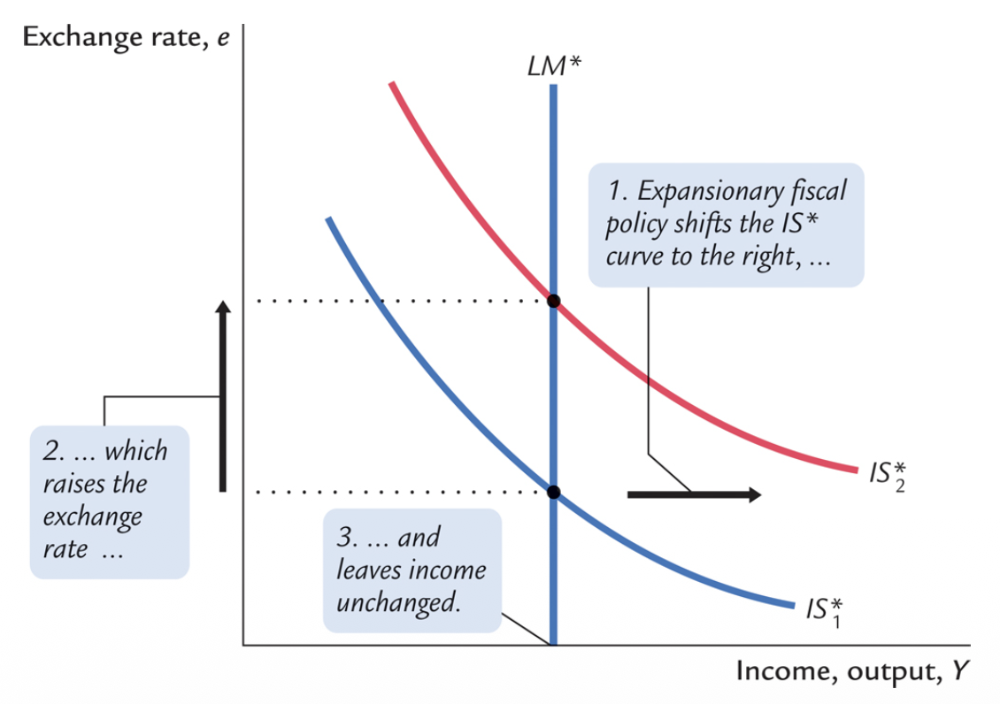
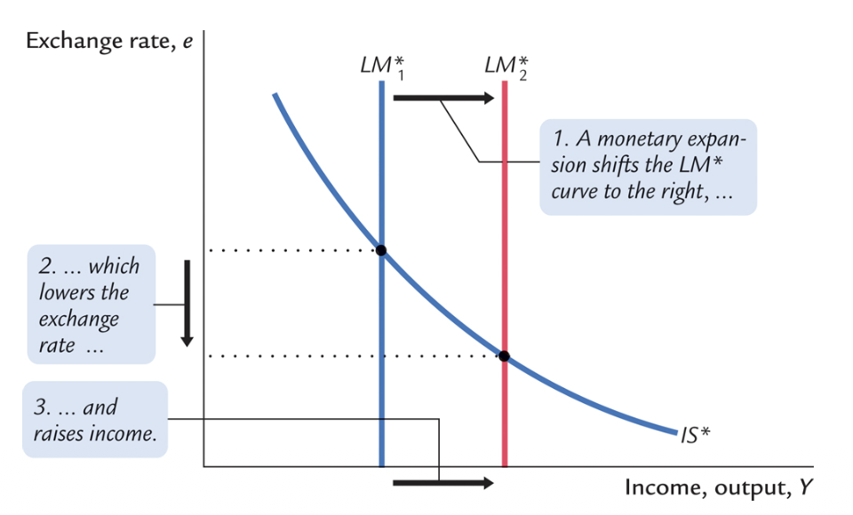
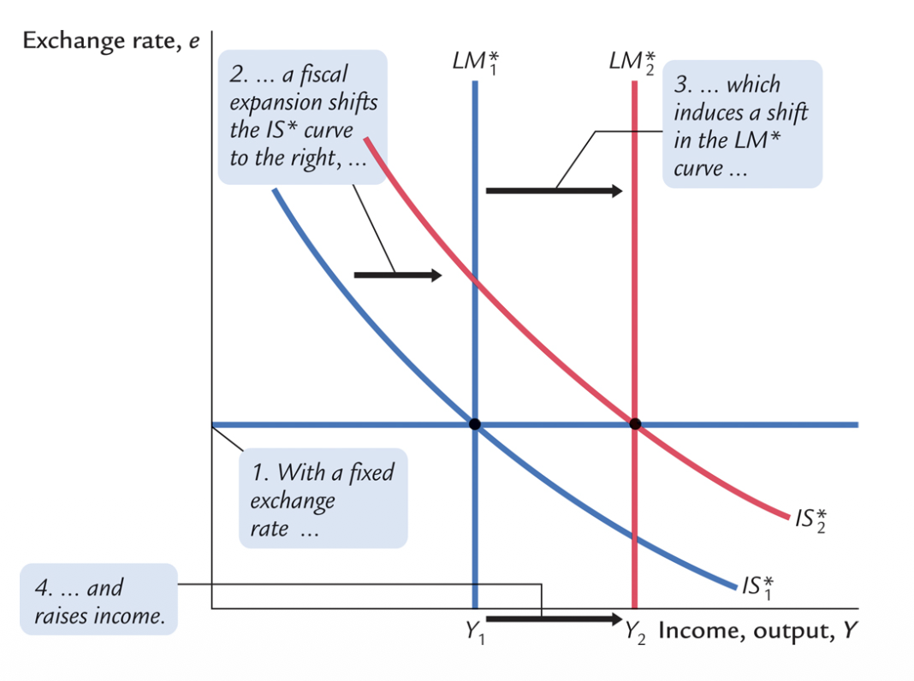
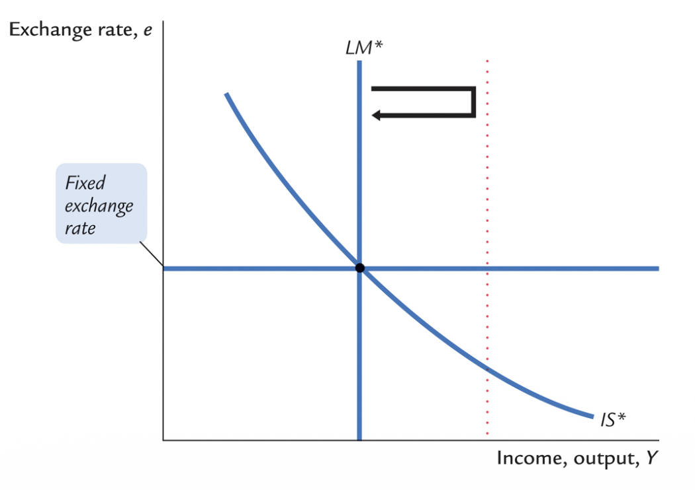
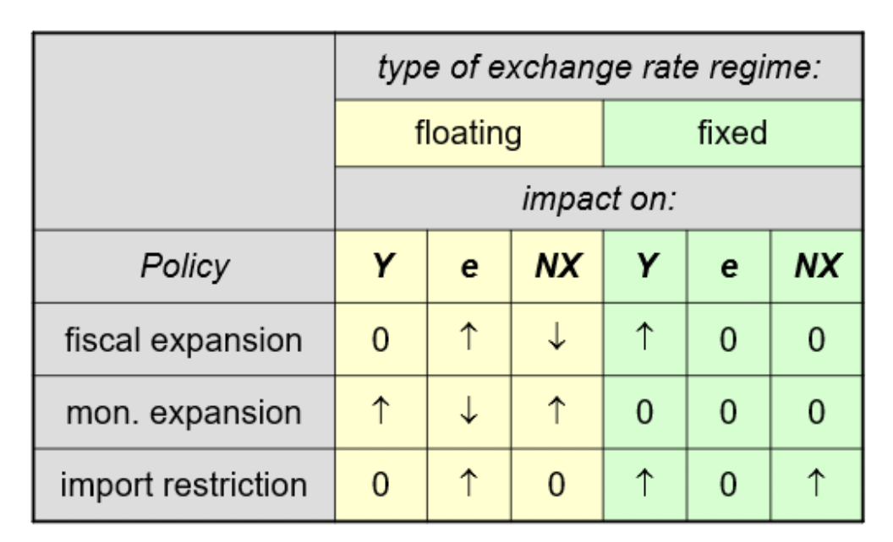
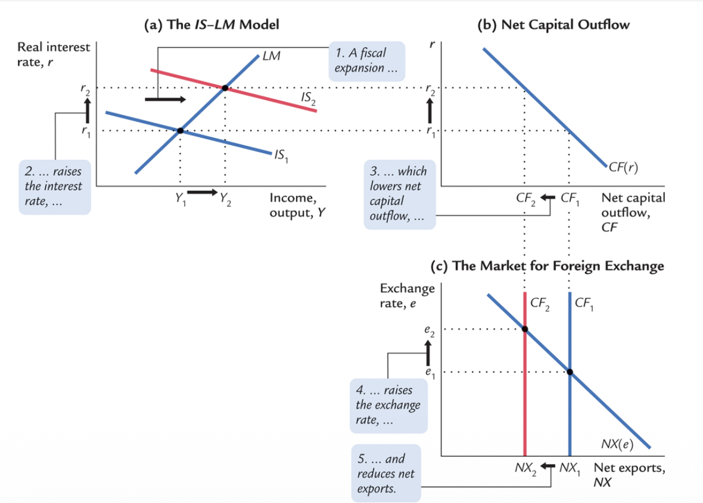

The Mundell-Fleming Model
Open Economy IS-LM, Policy Effectiveness, and the Trilemma
1. The Model Architecture
The Mundell-Fleming model extends the short-run IS-LM framework to an open economy under the assumptions of perfect capital mobility and price stickiness. It provides the analytical framework to evaluate fiscal and monetary policy effectiveness across different exchange rate regimes.
Structural Equations
In the closed IS-LM model, the interest rate $i$ is the endogenous variable that adjusts to clear the markets, plotted on the vertical axis.
In the Mundell-Fleming model, the interest rate is exogenous ($r = r^*$). The equilibrating variable that adjusts to clear the goods market is the exchange rate ($e$), which is therefore plotted on the vertical axis against aggregate output ($Y$).
2. Policy Effectiveness under Floating Exchange Rates
Under a floating exchange rate regime, the central bank refrains from foreign exchange intervention. The exchange rate $e$ adjusts endogenously to clear the foreign exchange market.
An expansionary fiscal policy fails to alter equilibrium aggregate output due to complete crowding out via the exchange rate.
Step 1: Interest Rate Tension
An exogenous increase in government spending shifts the IS* curve rightward. The incipient increase in output raises the transaction demand for money, generating upward pressure on the domestic interest rate:
Step 2: Capital Inflows & Appreciation
The positive interest rate differential triggers a massive capital inflow from foreign investors seeking higher returns. The increased demand for domestic currency causes an immediate nominal and real appreciation of the exchange rate:
Step 3: Trade Balance Deterioration
The appreciation erodes international competitiveness, deteriorating the trade balance and shifting the IS* curve back to its initial position:
Conclusion
The fiscal expansion is perfectly offset by the contraction in net exports. $\Delta Y = 0$.

Monetary policy operates exclusively through the exchange rate channel, effectively stimulating domestic output by increasing net exports.
Step 1: Interest Rate Easing
An exogenous increase in the money supply shifts the vertical LM* curve rightward. The excess supply of real balances generates downward pressure on the domestic interest rate:
Step 2: Capital Outflows & Depreciation
The negative interest rate differential triggers a massive capital outflow. The increased supply of domestic currency on foreign exchange markets causes a sharp depreciation:
Step 3: Trade Balance Improvement
The depreciation improves competitiveness, increasing net exports and stimulating aggregate output:
Conclusion
Monetary expansion successfully increases $Y$ strictly via the trade balance channel.

3. Policy Effectiveness under Fixed Exchange Rates
Under a fixed exchange rate regime (a peg), the central bank commits to maintaining the exchange rate at a predetermined level $\bar{e}$. This commitment requires continuous intervention in the foreign exchange market, fundamentally altering the nature of the money supply.
To prevent currency appreciation, the central bank must sell domestic currency and accumulate foreign reserves, expanding the domestic money supply ($M \uparrow$).
To prevent currency depreciation, the central bank must purchase domestic currency using its foreign reserves, contracting the domestic money supply ($M \downarrow$).
Implication: Under a peg with perfect capital mobility, the central bank relinquishes control over the nominal money supply. The money supply becomes an endogenous variable determined solely by the necessity to clear the foreign exchange market at $\bar{e}$.
Step 1: The Incipient Shock
A fiscal expansion creates incipient upward pressure on the interest rate, inducing capital inflows and pressure for the currency to appreciate:
Step 2: Central Bank Defense
To maintain the peg, the central bank must supply domestic currency, endogenously increasing the money supply. This shifts the LM* curve rightward:
Conclusion
The endogenous monetary expansion validates the IS* shift without any exchange rate crowding out. Output expands fully. $\Delta Y > 0$.

Step 1: The Incipient Shock
An attempted monetary expansion creates incipient downward pressure on the interest rate, inducing capital outflows and pressure for the currency to depreciate:
Step 2: Central Bank Defense
To defend the peg, the central bank is forced to immediately purchase the excess domestic currency, draining reserves and contracting the money supply back to its exact initial level:
Conclusion
Independent monetary policy is structurally impossible. The initial expansion is perfectly reversed. $\Delta Y = 0$.

Synthesis of Policy Effectiveness
The comparative statics of the Mundell-Fleming model demonstrate a strict symmetry: the effectiveness of fiscal and monetary policy is perfectly inverted depending on the exchange rate regime.
| Floating Regime (Endogenous $e$) | Fixed Regime (Endogenous $M$) | |||
|---|---|---|---|---|
| Policy Instrument | Output Effect ($\Delta Y$) | Transmission Mechanism | Output Effect ($\Delta Y$) | Transmission Mechanism |
| Fiscal Policy $G \uparrow$ or $T \downarrow$ |
INEFFECTIVE | Capital inflows appreciate the currency ($e \uparrow$), completely crowding out net exports. | EFFECTIVE | Incipient appreciation forces CB to increase $M$, accommodating the fiscal expansion. |
| Monetary Policy $M \uparrow$ |
EFFECTIVE | Capital outflows depreciate the currency ($e \downarrow$), stimulating net exports. | IMPOSSIBLE | Incipient depreciation forces CB to reduce $M$ to defend the peg, neutralizing the policy. |
| Trade Policy Import Tariffs |
INEFFECTIVE | Reduction in imports appreciates the currency, causing an equivalent reduction in exports. | EFFECTIVE | The exchange rate is fixed. The initial improvement in the trade balance is preserved. |

4. The Impossible Trinity (The Trilemma)
The Mundell-Fleming framework formalizes a fundamental macroeconomic constraint known as the Impossible Trinity. A nation cannot simultaneously maintain all three of the following policy objectives:
1. Financial Integration
Free capital mobility allowing optimal global capital allocation.
2. Exchange Rate Stability
A fixed exchange rate to eliminate currency risk for trade.
3. Monetary Autonomy
Independent control of the interest rate for macroeconomic stabilization.
Macroeconomic Trade-offs:

Mundell-Fleming & Trilemma — Academic Format (B2/C1 English). Revised May 2026.